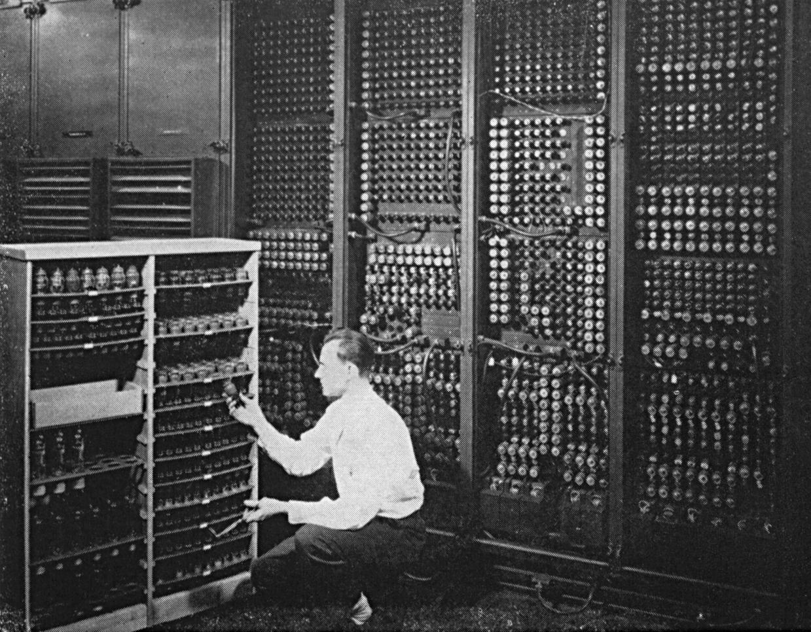
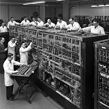

Začetki računalništva
Vakuumske cevi
Prva generacija računalnikov (1940–1956) je bila utemeljena na uporabi vakuumskih cevi. Ti ogromni elektronski elementi so bili srce strojev, ki so bili tako veliki, da so zasedli celotne prostore.
Ključne značilnosti:
- Ogromne dimenzije (cele sobe).
- Visoka poraba električne energije.
- Pogosto pregrevanje in okvare.
Najbolj ikoničen predstavnik tega obdobja je računalnik ENIAC. Kljub pionirskemu dosežku so bile te naprave izjemno nezanesljive in zahtevne za vzdrževanje.

